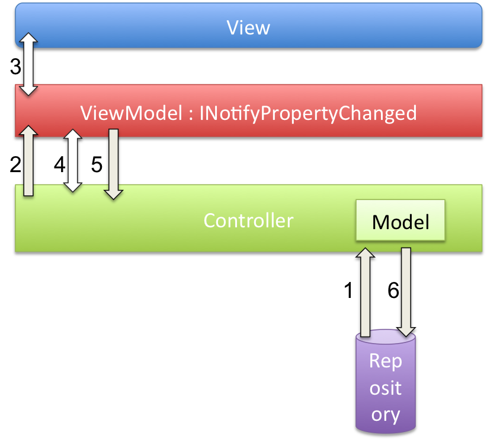

For a broader overview of the architecture take a look at The architecture page. What we want to focus on in this section is how the architecture relates to development practices and the other technologies in our project. Our hope is that new developers will meet less resistance when being integrated in the project if they have a greater understanding of where the different nuts and bolts fit in the ever growing system that is Smeedee.
Smeedee's architecture is a fairly standard one and by no means an architecture to be intimidated by. There are clients, a server, a database and something that we have elected to call a Task Scheduler, which in essence is just a windows service that supplies runs different tasks at certain intervals, usually to supply the database with information. We'll start at the top (the client) and work our way down meanwhile trying to show how we in Smeedee do development on each each architectural element.
Development on a the client side is in most cases associated with our Widget concept, either doing maintenance on an existing one or making a brand new one from scratch. When doing this kind of work its important to keep in mind the pattern that we use as a template for all our Widgets, namely the Model-View-ViewModel (MVVM) pattern. You can read more about MVVM in chapter 3.1.
The client communicates with the server through web services and these should be, and for most existing services are, referenced in the Smeedee.Client.Framework.SL project (ref 5.2). You can use these references to make a "Repository" class which acts as a service wrapper and is also placed in the same Smeedee.Client.Framework project, more specifically in a folder conveniently marked Repositories. For fore information on the repository pattern see chapter 3.3. In a few cases there are, and needs to be, a handful of helper classes in some of the widget projects, but the rule of thumb is to extract all general concepts to our domain model and all general logic and service references to the framework projects. For more information and examples on this take a look at chapter 5. We have also made a short step by step walk-through for creating a new Widget and its affiliated classes from a Visual Studio environment which you'll find here.
The server's only job is to allow clients access to the database. This is done via web services. Creating a new server component is easy, all you have to do is:
These are the main steps in essence. It's that easy! Now you're set to make a client widget that uses the new component like we discussed in part 1.1.
The Smeedee database is an SQLite database. This is a self-contained and serverless database consisting of a single file. Upon installation a file by the name of "smeedeeDB.db" will be copied to your %AppData% folder and it is this file which Smeedee uses to store and access data. The file can also be accessed by third-party applications such as SQLite Admin or similar.
This is the nerve center of our integration process. As you might already have guessed, the Task Scheduler is responsible for running a number of tasks on the server, usually to collect and persist data. Persistence is done by way of NHibernate (Ref 4.1). Harvesters and other integration components are often placed in the "Integration" folder (Ref 5.6), however some tasks may be self contained.
In Smeedee we practice Test Driven Development (TDD), specifically the kind that is Behavior Driven. We currently operate with three different test syntaxes in our project. We have the classic NUnit syntax which in some cases has a BDD twist. In parallell with this we have the old and new TinyBDD syntax. This is mostly due to a rocky start standard-wise, but now we conform to the newest TinyBDD syntax and would appreciate that all contributors try to do this as well. Read more about TinyBDD and get syntax examples at the TinyBDD project page.
MVVM is short for Model-View-ViewModel. It is a pattern based on the MVC and MVP patterns. The basis of the pattern is basic MVC; you separate your code into a model, view and a controller. The new thing in MVVM compared to MVC is the ViewModel. This is a special model made only for the visual presentation, the view. This has very positive effect on the testability of your application.
Say you have a Customer model. The customer has all the default boring properties like name and age and so on. In the system, you need to show or hide alcoholic beverages depending on the customer age. So, where do you put the logic? It is tempting to just put a condition in the view that sais if customer.Age is greater than 18 then show alcoholic beverages. This is the most basic trap, because you now have business logic in your GUI component. Great... The thing is that we do not want any logic in GUI components. They are very cumbersome to test, and chances are they just won't be tested. You can also remedy this situation by letting the controller set the visibility of alcohol beverages. Yay, then you don't have any logic in the GUI component! But there is a catch: You still need the GUI component when you test, and to verify the behavior of the controller, you will have to check the GUI component. Are the alcoholic beverages really hidden?
Enter ViewModel. The ViewModel acts as a model for the View, hence ViewModel. In our case the ViewModel would have a property called IsAlcoholBeveragesVisible that is set by the controller. Using WPF databinding one can bind GUI element properties to this property of the ViewModel. The binding is defined in the XAML code of the View, and it works both ways. If the ViewModel changes a property the view will update, and if the user changes a property that is bound to the ViewModel it is updated. For example you can bind a textbox' text property to the FirstName property of your Customer. If the Text property of the textbox is changed it will updated the FirstName, and vice versa.
This means that you can now test the workings of the controller, without ever dipping into the GUI part of the framework! Because all decisions made by the controller now results in a change in the ViewModel, and the ViewModel is just a plain .NET object, we can easilly test the behavior of the controller. The MVVM pattern is used together with the Commands pattern to provide a way to invoke actions in the Controller from the View.
To illustrate this point we can look at the following figure: 
The command pattern is at the heart of the MVVM pattern. As mentioned in chapter 3.1 a command can be injected into a ViewModel. By way of binding we can create a bridge between actions performed on the view, say a click on a button, and the controller.
In Domain Driven Design it is very popular to use a design pattern called the Repository Pattern. This is a pattern for persisting and retreving objects, and it is used to hide all implementation details concerning the actual technology used for persitance.
The reason we use the repository pattern instead of a reguar Data Access Layer (DAL) is to make a clear cut abstraction where we start using terms from the domain we are working with. This means that there should be no SQL, no paths and no persistence-specific code when you retreive or save/update domain objects. This way we can keep code beyond the repositories true to the domain. The snippet below shows the IRepository interface:
public interface IRepository
{
IEnumerable Get(Specification specification);
}
The Get method returns a list of Changesets, based on the specification you provide as a parameter (the use of a specification is a pattern in its own right, and it is explained in the Specification Pattern chapter). The repository hides all the nitty gritty details about where the objects are stored, and how they are fetched, all you need to do is to specify what objects you would like to be returned. All objects that needs to retreive objects use an IRepository<TDomainModel> to do so. This way we can control what source is used to get objects. This is good for testing and also gives more control runtime as we can have fall over repositories etc.
We mentioned previously that one point of using repositories is to be able to use domain language. This can be seen in the following example:
repository.Get(new ChangesetsAfterRevisionSpecification(50));
This example is from the CheckinNotificationController on the client side of Smeedee (the Silverlight app). Here the user wants to get all the changesets after revision number 50. The alternative DAL way of doing this would be to declare a new method on the DAL, for example dal.GetChangeSetsAfterRevision(50). This would break the Open-Closed principle very badly. The interface itself would have to change. With the repository+specification approach we can keep the same interface and just introduce a new specification whenever we need to specify something. The specification itself will contain the actual code for checking if a changeset satisfies the given specification. This means that the repository is closed for modification but open for extension by passing different specifications.
Smeedee works by taking information out of various systems and aggregating it. This information can then be combined with other information and presented on a screen. Whenever an integration repository goes out and retreives information from a system, say Subversion, the information is converted into a Smeedee domain model. This makes it possible for the rest of the Smeedee system to treat information from different systems, in the same way. For example the information from a version control system, like Subversion, Git or Team Foundation System will all be translated by their respecitve repositories and given to Smeedee as a domain model called Changeset. Now Smeedee will have to store this information somewhere. This is where Nhibernate comes into the picture.
Nhibernate is a Object-Relational-Mapper, ORM for short. NHibernate takes a domain model, in the form of a .NET class, and stores instances of this class into a relational database. In Smeedee we currently use SQLite as our relational database. To achieve this we need to give NHibernate some hints as to how things should be stored in the database. This is called a mapping, and it is defined in xml files ending with hbm.xml. In Smeedee these mappings can be found in the DomainModel project.
So what does a mapping look like? Well, it looks like xml of course! Under is a sample Nhibernate mapping taken from the Smeedee codebase.
<?xml version="1.0" encoding="utf-8" ?>
<hibernate-mapping
xmlns="urn:nhibernate-mapping-2.2"
assembly="Smeedee.DomainModel"
namespace="Smeedee.DomainModel.SourceControl">
<class name="Changeset" table="Changeset">
<id name="Revision">
<generator class="assigned"/>
</id>
<property name="Time"/>
<property name="Comment"/>
<component name="Author" class="Author" lazy="false">
<property name="Username"/>
</component>
</class>
</hibernate-mapping>
This mapping contains alot of information that Nhibernate uses to understand what to do when it is told to save a Changeset. For starters, the hibernate-mapping element says what assembly and namespace the mapped type lives in. It then goes on and defines a class element. In this element the actual class name is given, along with the desired tablename. The tablename is independant of the class name. The id element defines the property Revision as the primary key for this type. That is, we're telling Nhibernate that Revisions are uniqe and can be used a primary key within the Changeset table. The generator element tells NHibernate to lay off, we want to assign the id ourself. This value comes from the system where the Changeset originates, and it is set by the integration repository. The property element just tells Nhibernate that the property should be stored in the database. The component element is much more interesting!
The Changeset class has a property called Author, whitch is of type Author. Nhibernate can automatically "map" basic types like ints, DateTime, string, char etc. But when an unknown type is part of an object graph it gets too much for Nhibernate to handle on its own. So we're giving Nhibernate some help by saying that we would like Author to be stored as a "component" of the Changeset. This means that the Author property of Changeset is stored in the same table as the Changeset itself, and not in a separate table with a foreign key to it. The property element inside the component element tells Nhibernate what properties of the Author we would like to store "inline" with the Changeset. The Author class only has one property, Username, and with this mapping it is stored in its own column in the Changeset table.
NHibernate is a very feature rich system, and most of it is out of scope for this article. For more information on how to use the more advanced feature of NHibernate have a look at the documentation over at NHibernate Forge.
MSBuild is Microsoft's own build platform which is a vital part of the .NET framework. We use MSBuild build scripts for continuous integration and for invoking WiX to make install kits. Build scripts can be run manually from a command prompt using the MSBuild.exe program. You'll find the .NET4 version in "C:\Windows\Microsoft.NET\Framework\v4.0" or similar.
If you make any new projects and want them to build along with the rest of Smeedee when the build scripts are executed, just add them to the Smeedee.sln solution and they will be automatically included in the build process.
Test projects however are a bit different, to include these projects to be automatically executed by the NUnit testrunner, just add them to the Smeedee.TestProjects.msbuild file in the same manner as the existing test projects.
Managed Extensibility Framework (MEF) is a highly flexible framework for connecting application components together. Its just short of pure magic and proper use of it makes adding new functionality to your application (at any point in your development stage) tremendously less painful than it otherwise would have been. To show you just how magic MEF really is we give you the following example:
Picture that we have two classes, class A and class B. We now want to have a field reference to class A in class B. Traditionally one instance a A and B class and then use a "B.a = a;" or something like that via a 3. party code (like for instance the main method). With MEF you get a quite different approach. If you define a [Export()] attribute on class A (like example below)
Export(typeof(A))
class A { ... }
class B:
Unknown macro: { [Import(typeof(A))] public A a; }
This section will go through most of our solution file and is aimed at giving you a better understanding of where components are and were they should be placed. Its only logical that we start at the beginning, so this is what you see when you open our main solution file:
In this folder we keep our build scripts, which are mainly used for Continuous Integration (CI) and generating install kits with Wix.
This folder houses all the components that belong to our client, excluded the general domain concepts which are kept in the DomainModel folder (Ref. 6.5). Widgets have their own folders, with one folder possibly containing more than one Widget. There isn't any official convention for widget placement, although all Widgets are at present date categorized by either functionality or which data they require access to.
The Framework projects are a good example of the general project structure we use in Smeedee. We have one class library project, one test project (marked "Tests") and one Silverlight project (marked "SL"). General client logic and functionality should be placed in the Client.Framework project. For example classes like type converters for Silverlight bindings are placed here then mirrored by way of linking into the Framework.SL project. This is done because Silverlight projects can only reference other Silverlight projects. Widgets access data by way of repository classes. These again are wrapper classes for a specific web service.
As mentioned in chapter 1.2 the collected data is exposed through web services running on the server. These services references are placed in the "Framework.SL" project and all future services should also be added here.
This is a folder for components that are common for all the parts of Smeedee. Currently it only holds a Guard class.
The DomainModel folder is fairly self explanatory. this is where we place general concepts and interfaces for all the different components of Smeedee.
As with integration code, all domain concepts that are related to a specific subject matter are placed in the same folder. These are mirrored into the ".SL" project for the same reasons as explained in chapter 6.2.
The integration folder contains the logic required by many of the tasks to talk to third party systems. More specifically it contains helper classes that amount to various repositories. These repositories work as wrappers for said logic and is again used by the corresponding Task. We use the same organizational theme here as with the other project, meaning logic is categorized by subject matter and placed in related folders.
The name "Server" might be a bit misleading because this folder will (after compilation) contain the XAP (Silverlight-based application package) client file. It also contains the webpage in which the Silverlight application is hosted.
Despite the fact mentioned above the term "Server" is still applicable. This is because the web services that fetch data from the database is also defined here. These services are the same services that we reference client side (see 5.2 for details). This means that when you run the solution from Visual Studio the "ASP.NET Development Server" automagically creates instances of these services which in fact is our whole server architecture. When you run a install kit the services will be installed on the local IIS server. So in short the only thing you have to do when creating a new server component is to create a new service and corresponding test suite and then reference it in the "APD.Client.Framework.SL" project (Ref. 5.2).
The installer solution contains a WiX project along with some resources such as a copy of the "GNU Lesser General Public License" and media files used by the installer. To add components and actions to the Installer package, have a look at product.wxs.